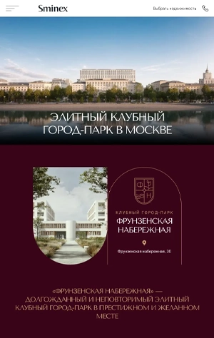
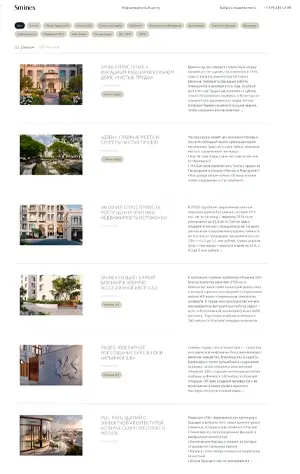
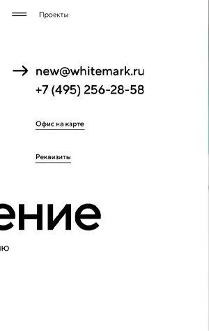

Портфолио
На этой странице представлены некоторые мои работы, в которых я применил современные подходы к вёрстке и разработке. Каждый проект свёрстан по методологии БЭМ (Block, Element, Modifier) — с чистой, понятной структурой кода, что обеспечивает его масштабируемость и удобство поддержки. В проектах активно используются CSS-переменные для гибкого управления темами и стилями, а также реализованы плавные анимации и эффекты наведения, придающие интерфейсу динамику и современный вид.
Кроме чистого HTML и CSS, в некоторых работах применён JavaScript для интерактивности: слайдеры, плавные прокрутки, открытие/закрытие меню и другие микровзаимодействия. Уделено внимание доступности (a11y), семантической разметке и адаптивности под разные устройства.
В своих проектах я стремлюсь к созданию не только красивых, но и функциональных интерфейсов, которые обеспечивают удобство и простоту использования. Я постоянно изучаю новые технологии и подходы, чтобы улучшать свои навыки и предлагать клиентам современные решения.
-
 Адаптивная вёрстка, точно соответствующая макету (pixel perfect). Учтены все брейкпоинты: корректное отображение на мобильных, планшетах и десктопах. Структура построена по методологии БЭМ. Изображения подключены через `picture` с `srcset` для разных устройств, включая WebP. Использованы абсолютное и относительное позиционирование, `z-index`, трансформации и оверлеи — для точной стыковки элементов. Чистый, понятный код и визуально точная реализация. -
 Этот проект — адаптивный лендинг с плавным переключением отображения карточек из плитки в список и анимированным бургер-меню. Всё сделано чисто по БЭМ, с продуманной структурой, переменными в CSS и плавными переходами. Отличная демонстрация интерактивности на чистом JavaScript и внимания к деталям. -
 Этот проект — яркий пример качественной вёрстки с акцентом на анимации. Здесь реализован плавный лоадер при загрузке страницы и множество внутренних анимационных эффектов: появление элементов при прокрутке, плавные переходы и анимированное бургер-меню. Всё сделано на чистом HTML, CSS и JavaScript с соблюдением БЭМ. Проект демонстрирует умение оживлять интерфейс и создавать запоминающийся визуальный опыт без излишеств — только осмысленная и плавная анимация.